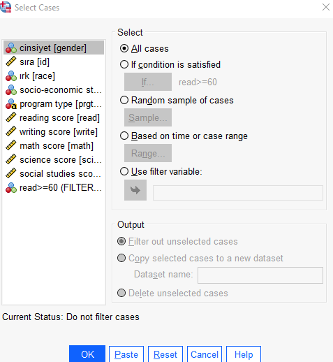
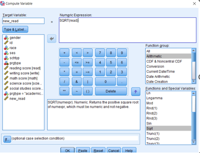

SPSS Üzerinde Betimleyici İstatistiklerin Hesaplanması
Belirtici istatistikler iki grupta incelenebilir. Öncelikle kullanılacak olan terimlerin neler olduğunu anlamamız gerekir.
1. Yer (Eğilim) Ölçüleri (Measures of Location)
Verilerin merkezi eğilimlerini ve verilerin belirli yüzdelerinin hangi değerlerde toplanma eğilimini gösteren tipik değerlerdir. Bu istatistikler toplum parametresini tahmine yardımcı olur. Ortalama, medyan, kartiller Yer ölçüleri ve açıklamaları aşağıda verilmiştir.
Ortalama neden gerekli?
Elde edilen ham verinin frekans tablosu ya da sınıfandırılmış hale getirilmesi ya da düzenlenen verinin grafiksel yöntemlerle ifade edilmesi incelenen konuyla ilgili bir fikir verebilir ancak bu bilgiler kesin değerlendirmeler yapılması için yeterli değildir.
Bu yüzden tüm seriyi tek bir sayıyla ifade eden, karşılaştırılabilir ölçütlere ihtiyaç duyulmuştur.
Bu ölçütlere genel olarak merkezi eğilim ölçütleri denir.
Ortalamalar en çok kullanılan ve en temel merkezi eğilim ölçütlerindendir
En çok kullanılan ortalama türleri aşağıdaki gibidir..
Aritmetik Ortalama (Mean, Average) * n değerin toplamının n’e (birim sayısına) bölünmesiyle bulunur. * Çan eğrisi biçiminde simetrik dağılım gösteren verileri en iyi temsil eden merkezi eğilim ölçüsüdür. * Analitik araştırmalarda en sık kullanılan istatistiktir.
Geometrik Ortalama (Geometric Mean) * n birimin değerleri çarpımlarının n kökünün alınması ile bulunan bir istatistiktir. * n değerin logaritmaları toplamının n’e bölünmesi ile bulunan logaritmik ortalamanın antilogaritması alınarak da hesaplanabilir. * Aritmetik ya da geometrik olarak düzenli artan ya da azalan dizilerin merkezi eğilimini belirtmekte kullanılır.
SPSS’de Betimleyici İstatistiklerin Hesaplanması
Bu örnekte kullanacağımız veri hs0.sav SPSS veri dosyası kullanılacaktır.
SPSS programı üzerinde Analyze menüsü üzerinden işlemler yapılır.
Analyze > Descriptive Statistics > Descriptives seçenekleri tıklanır.
Belirtici istatistikleri hesaplanacak olan veriler Variables alanına taşınır.
Hangi istatistiklerin hesaplanacağını belirlemek için Options butonu tıklanır. SPSS’de hesaplanabilecek belirtici istatistikler ve dağılım istatistikleri aşağıdaki şekilde belirtilmiştir.
Seçimler yapıldıktan sonra Continue tıklanır ve ana ekrana dönülür.

Daha sonra OK tıklanır ve sonuçlar Output pencesinde karşımıza çıkar. Bu çıktıda ortalama, standart sapma, standart hata, varyans, min, max, range istatistikleri, kurtosis, skewnees istatistikleri ile standart hata yer almaktadır.
Descriptive statistics tablosunda ilk sütun değişkenleri gösterir. N ise toplam birim sayısını gösterir.
2. Dağılım Ölçüleri
Verileri dağılım biçimini, ortalama etrafında değişimini, yayılmalarını ve serpilmelerini belirlemeye yarayan ölçülerdir. Değişim ölçüleri ve açıklamaları aşağıda verilmiştir.
Değişim Aralığı (Range, DA) * Bir dizide en büyük değer (Xmax) ile en küçük değer (Xmin) arasındaki farktır.
Varyans (Variance) * Bir dizideki değerlerin ortalamadan olan farkları kareleri toplamının (n-1) sayısına bölünmesiyle bulunan bir dağılım ölçüsüdür. * Kare farklarının ortalaması diye de isimlendirilir.
Standart Sapma (Standart Deviation) * Varyansın karekökü alınarak bulunan bir standart dağılım ölçüsüdür. * Birimi değişkenin ölçü birimine eşittir.
Standart Hata (Standart Error of Mean) * Standart sapmanın birim sayısının kare köküne bölünmesiyle bulunan bir dağılım ölçüsüdür. * Ölçü birimi değişkenin ölçü birimi ile aynıdır.
Enbüyük Değer (Maximum, Xmax) * Bir dizideki gözlenen en büyük değerli gözlemdir. * Xmax biçiminde gösterilir.
Enküçük Değer (Minimum, Xmin) * Bir dizideki gözlenen en küçük değerli gözlemdir. * Xmin biçiminde gösterilir.
Değişim Katsayısı (Coefficient of Variation) * Bir dizinin standart sapmasının ortalamasına bölünmesi ve 100 ile çarpılması ile bulunan bir dağılım ölçüsüdür. * Ölçü birimleri birbirinden farklı iki ya da daha fazla değişkenin dağılım yoğunluklarını karşılaştırmak amacıyla yararlanılan bir ölçüdür. * Birimi yoktur.
Çarpıklık (Skewness) * Bir dağılımın normal dağılıma göre simetrik ya da çarpık (asimetrik) olup olmadığını belirten bir ölçüdür. \(α_3\) gösterilir. * Simetrik (normal) dağılımda \(α_3\) ’ün değeri 0’dır. * \(α_3\) ’ün önemliliği, dağılımın simetrik olup olmadığı, normal dağılım yaklaşımıyla test edilir.
Basıklık (Kurtosis) * Bir dağılımın normal dağılıma göre basık ya da sivri sivri (tepeleşmiş) olup olmadığını belirten bir ölçüdür. * Basıklık ölçüsü normal dağılımda 3 değerini alır. * Dağılımın basıklığının önemliliği, normal dağılıma göre basık olup olmadığı normal dağılım yaklaşımıyla test edilir.
Dağılım Ölçülerinin Uygulaması
Menü yoluyla:
Analyze > Descriptive Statistics > Descriptives seçenekleri tıklanır.
Değişkenler Variables tarafına koyulduktan sonra Options seçeneğinden ölçüler seçilir ve Continue seçeneği ile diyalog kutusu kapatılır.
Daha sonra OK denilerek sonuçlar tablo halinde elde edilir.
Frekans Serisi Oluşturma
SPSS te tasnif edilmiş (frekanslı) seriyi oluşturmak için Analyze menüsünden Descriptive Statistics ve Frequencies tıklanır.
Gelen ekranda frekans dağılımı araştırılan değişken Variable(s) kısmına girilir. Biz otomobillerin modellerinin dağılımını görmek istiyoruz. Bunun için variable(s) kısmına Model değişkeni girilir. Statistics ve Charts kısmından ilgili seçenekler işaretlenip OK tıklanır.
Not: Kullanılan değişkenler mtcars (otomobiller) verisetinin Türkçe ve İngilizce değişken isimleridir.
Silindir Sayısının dağılımı aşağıdaki şekilde çıktı ekranında görüntülenir.
Dağılımın çubuk grafiği aşağıdaki şekilde görüntülenir.
Explore (Keşfetme) Seçeneği
Explore prosedürü, tüm vakalarınız için veya vaka grupları için ayrı ayrı özet istatistikler ve grafiksel görüntüler üretir. Araştırma prosedürünü kullanmanın birçok nedeni vardır: * veri taraması, * aykırı değerlerin belirlenmesi, * açıklama, * varsayım kontrolü ve alt popülasyonlar (vaka grupları) arasındaki farklılıkların karakterize edilmesi.
Veri taraması olağandışı değerlere, aşırı değerlere, verilerdeki boşluklara veya diğer özelliklere sahip olduğunuzu gösterebilir. Verileri araştırmak, veri analizi için düşündüğünüz istatistiksel tekniklerin uygun olup olmadığını belirlemenize yardımcı olabilir.
Explore (Keşfetme) Seçeneği Uygulaması
Explore (Keşfetme) Seçeneği Uygulaması için hs0.sav datası kullanılmıştır.
SPSS’deki Explore işlevini kullanarak reading score (okuma skoru) için daha ayrıntılı özet istatistikler elde edebiliriz.
Sonuçları
Daha detaylı bilgiler için (aşırı değerler: outliers, yüzdelikler: percentiles vb.) Statistics seçeneği seçilebilir.
Daha detaylı grafiksel bilgiler için (histogram, steam-leaf diyagramı, boxplot) Plots seçeneği seçilebilir.
Sonuçları
Grafiksel Sonuçlar
Histogram
Stem-leaf diyagramı
Boxplot
Tabakalı Betimleyiciler (Stratified Descriptives) Uygulaması
Tabakalı Betimleyiciler için Split File Kullanımı
Değişik analizlerde kullanılmak üzere bir veri dosyasını alt gruplara böler, ayırır. Tablo içindeki değişkenleri belli değişkenlere göre gruplayıp her grubun ayrı ayrı istatistik değerlendirmesini yapabiliriz.
Menü yoluyla:
Data > Split File
Ses (Sosyo Ekonomik Statü) değişkeni üzerinde veri bölümlemesini yapalım. Bu değişkenin 3 alt kategorisi (düşük, orta ve yüksek) vardır. Veriyi artık yapacağımız bütün işlemlerde bu 3 alt gruba ayrılmış olarak yapacağız.
Ses (Sosyo Ekonomik Statü) değişkenini tabakalandırdıktan diğer değişkenlerinde özet istatistiklerini alalım.

Daha sonra verimizi filtreleme işlemini yaptıktan sonra bir daha özet betimleyici istatistiklerine bakalım. Burada daha önce yaptığımız betimleyici istatistiklerinden farkı bu bilgileri 3 gruba ayırarak vermesidir.
Tabakalı Betimleyiciler (Stratified Descriptives) ile verimiz bölümlendirildikten sonra bütün yapacağımız analizler bu filtrelemeye göre yapılacaktır. Bu filtreyi kaldırmak için aynı menüyü açıp Analyze all cases, do not create groups seçilip OK ’e tıklanması gerekir.
Şartlı Seçim (Conditional Select) Uygulaması
Select Cases
Belirli bir özelliğe uyan birimlerin seçilmesini sağlar. Belirli bir kritere göre aynı özelliklere sahip birimleri diğerlerinden ayırarak işlemlere almayı sağlayan bir seçenektir.
Menü yoluyla:
Data > Select Case
Uygulama
Örnek olarak okuma skoru (reading score) için 60 geçme skoru puanı olsun ve bu skoru geçen öğrencileri filtreleyelim.
Artık yapacağımız bütün çalışmalarda okuma skoru değişkeni için 60 ve üzeri olan değerler alınacaktır. Örnek olarak bu değişkenin betimleyici istatistiklerini inceleyelim.
Bu tip filtreleme kullanıldıktan sonra aynı menü üzerinden All Cases seçeneği kullanılıp veri üzerindeki filtre kaldırılmalıdır.

Şartlı Seçim (Conditional Select - String) Uygulaması
Select Cases
Örnek olarak string tipinde okul tipini görmek için filtreleyelim.
Menü yoluyla:
Data > Select Case
Artık yapacağımız bütün çalışmalarda program tipi için sadece academic kategorisi alınacaktır. Örnek olarak bu değişkenin betimleyici istatistiklerini inceleyelim.
)
Şartlı Seçim (Conditional Select - Range) Uygulaması
Select Cases
Örnek olarak ilk 40 veriyi range seçeneğini kullanarak filtreleyelim.
Menü yoluyla:
Data > Select Case

Transform Menüsü
Veri dosyasının ana yapısını değiştirmeden veri değerleri üzerinde ihtiyac duyulan bazı dönüştürmeleri yapar.
Veri üzerinde kök alma, kübik hale getirme, log haline getirme ve matematiksel işlemler gibi noktalarda kullanılır.
Bu menüde en çok kullanılan seçenekler uygulamalı olarak gösterilecektir.
Compute Variable
Bazı durumlarda mevcut değişken değerlerini çeşitli matematiksel ya da mantıksal işlemlere tabi tutularak, bunlardan yeni değişken tanımlama ve yeni değişken değerlerinin hesaplanması gerekebilir. SPSS’de bu işlemleri yapabilme seçenekleri ve imkânı vardır. Uygulanan matematiksel işlem sonucu elde edilen yeni değerler, araştırmacı tarafından tanımlanan farklı bir değişkene (Target Variable) atanır. Tanımlanan yeni değişken ve değerleri Data View sayfasında farklı bir sütunda görüntülenir. Bu işlemler için işlem algoritması aşağıdaki gibi uygulanır.
Bu seçenek veri setinde yeralan değişkenlerden belirli bir cebirsel (trigonometrik, aritmetik ve mantıksal fonksiyon) kritere göre tüm birimler için yeni değişkenler belirlemeyi sağlar. Bu seçenek tıklandığında aşağıdaki ekran görüntülenir ve ekrana girişler yapılır.
Örnek
Okuma skoru (read) değişkeninin kareakökünü alalım ve karekökü alınmış değişkeni yeni bir değişken olarak tanımlayalım. Yeni değişken Data View kısmı üzerinde oluşacaktır.
Bu yeni değişkenimize new_read ismini pencerede Target Variable bölümüne yazalım.
Daha sonra Numeric Expression kısmına yapmak istediğmiz düzenlemeye dair formülü girelim.
Burada karekökü alma SQRT() formülü ile gerçekleştirilir.
Bu ve diğer bütün seçeneklere Function group: bölmesi üzerinden de erişebilirsiniz.

Örnek
Bernoulli dağılımını (dağılım parametre değeri = 0.5) kullanarak rastgele sayılar üretelim ve ismi *new_read1 olarak veritabanımıza eklensin.
Recode Into Different Variables (Kategorik)
Recode Into Different Variables iletişim kutusu, mevcut değişkenlerin değerlerini yeniden atamanıza veya mevcut değer aralıklarını yeni bir değişken için yeni değerlere daraltmanıza olanak tanır. Örneğin maaşları, maaş aralığı kategorilerini içeren yeni bir değişkene daraltabilirsiniz.
Sayısal ve dize (string) değişkenlerini yeniden kodlayabilirsiniz. Sayısal değişkenleri dize değişkenlerine (veya tam tersi) yeniden kodlayabilirsiniz.
Eğer birden fazla değişken seçerseniz hepsinin aynı türde olması gerekir. Sayısal ve dize (string) değişkenlerini birlikte yeniden kodlayamazsınız.
Recode iki alt menüden oluşmaktadır. * Into Same Variables: Kayıtlı değerlerin kodlanmasını sağlar. Bir değişkenin belirlenen aralıktaki değerlerini yeni kod değerleri ile aynı isim altında veri sayfasına yazmaya yarar. * Into Different Variables: Kayıtlı değerlerin kodlanmasını sağlar. Bir değişkenin belirlenen aralıktaki değerlerini yeni kod değerleri ile farklı bir değişken ismi altında veri sayfasına yazmaya yarar.
Örnek
SES (Sosyo-Ekonomik-Statü) değişkenini 3 kategoriden (1-Low, 2-Middle, 3-High) 2 kategoriye çevirme (1-Low, 2-High) işlemini gerçekleştirelim. Yeni oluşturacağımız değişkenin ismi ses_final olsun
Yeni Değişkenler İçin Yeniden Kodlanacak Değerleri Belirleme
Menü yoluyla:
Transform > Recode into Different Variables…Yeniden kodlamak istediğiniz değişkenleri seçin. Birden fazla değişken seçerseniz bunların aynı türde (sayısal veya dize) olması gerekir.
Her yeni değişken için bir çıktı (yeni) değişken adı girin ve Change’e tıklayın.
*Old and New Values’e tıklayın.
Eski değeri ve yeni olmasını istediğiniz değeri belirtin.
Eski ve yeni değişimini yapmak için Old–>New listesine yerleştirmek için Add seçeneğini tıklayın.
*Old and New Values üzerinden kategori numara değişimlerini yapalım.
1 (old value) olan kategori sınıfını 3 (new value) yapalım ve Add seçeneği ile diyalog kutusuna ekleyelim. Yani yüksek sosyo-ekonomik sınıf ile düşük sosyo-ekonomik sınıf değerlerini değiştirelim.
3 olan kategori sınıfını da aynı işlemleri yaparak 1 yapalım ve Continue ile işlemi tamamlayalım.
Daha sonra yeni oluşan değişkenin alt kategorileri SPSS ana sayfasında Variable view kısmından Values seçeneği ile tanımlanır.
Automatic Recode
Bir değişkenin değerlerini büyüklük sırasına göre dizerek yeni bir değişkene birden başlayarak yeni değerlerle kodlayarak yazar. Yeni değişken sınıflandırıldığında orjinal değerlerde tabloda görüntülenir.
Menü yoluyla:
Read değişkenimizi autorecode ile yeni bir değişken haline getirelim ve yeni ismi read_autorecode olsun.
Add New Name tıklayarak ekleyelim ve OK ’e tıklayarak işlemi tamamlayalım. Daha sonra tanımladığımız veri Data View ksımında görünecektir.
Yeni Değişken Oluşturma
*Transform > Compute Variable seçeneğini kullanarak yeni bir değişken oluşturalım.
Bu değişken reading, writing ve math skorlarının toplamından oluşsun ve ismini total olarak belirleyelim.
Recode Into Different Variables (Range kullanarak)
Bu uygulamayı daha önce oluşturduğumuz total değişkeni üzerinden işleme sokalım.
Örnek Total değişkeni için aşağıdaki aralıkları kullanarak değişken tanımlamalarını yapınız ve değişken kategorilerini atayalım. * (0,80] arası 0 * (80,110] arası 1 * (110,140] arası 2 * (140, 170] arası 3 * (170, 300] arası
4
Değişken kategorilerini SPSS anasayfasında Variable View kısmında Values sütununda atanması gereklidir.
ÇAPRAZ TABLOLARIN OLUŞTURULMASI
Veri setlerinde yer alan değişkenlerin frekans dağılım tablolarının ya da çapraz tablolarının hazırlanması, verilerin özetlenmesi bakımından önem taşımaktadır.
Çapraz tablolar, iki değişkenin karşılıklı alt seçeneklerini birlikte gösteren tabloladır. \(r*c\) biçimindeki (r=sıra sayısı ve c=sütun sayısı) çapraz tabloların veri sayfasına girilmesinde tablonun sıra ve sütun sayısı dikkate alınarak giriş yapılır. İki değişkenin alt sçeneklerine aynı anda sahip olan birim sayıları, çapraz tablonun göze frekanslarını oluşturur. Çapraz tablolar daha çok az sayıda seçenek içeren kategorik değişkenler için ya da sınıflara bölünerek kodlanmış ve k sayıda sınıfa indirgenmiş aralıklı/orantılı ölçekli verilerin gösteriminde yararlanılır.
Her ikisi de nitel türden ya da nicel türden fakat sınıflama veya sıralama düzeyinde ölçülmüş (yani gruplandırılmış frekans verisi), birisi nitel türden diğeri nicel türden fakat sınıflama veya sıralama düzeyinde ölçülmüş (yani gruplandırılmış frekans verisi) olan değişkenlere ait verileri düzenlemede ve bu tür değişkenlerle ilgili uygun olan istatistiksel analizleri gerçekleştirmede çapraz tablolara ihtiyaç duyulmaktadır.
SPSS’de Çapraz Tablo Oluşturulması
SPSS veri sayfasında sütunlara uygun girişler yapılır.
Analyze > Descriptive statistics > Crosstabs seçenekleri tıklanır.
image.png Açılan bu ekranda değişkenler listesinde yer alan değişkenlerden birisi satır değişkenine (Row(s)), diğeri sütun değişkenine (Column(s)) aktarma butonu yardımı ile aktarılır. OK butonuna basarak çapraz tablo oluşturulur.
image.png Elde edilen çıktıdaki tablo bilgileri yanında bazı katsayı ve ölçülerin görüntülenmesi isteniyorsa işlem penceresinde Statistics seçeneği tıklanır. Bu pencerede çıktıda yer alması istenilen istatistikler ve katsayılar işaretlenir. Continue tıklanır.
Çapraz Tablo Çıktısı
Yukarıdaki çapraz tablo sonuçlarını incelediğimizde:
- Otomatik vitese ve bir adet karbüratöre sahip 3 otomobil modeli vardır.
- Manuel vitese ve bir adet karbüratöre sahip 4 otomobil modeli vardır.
- 4 karbütöre ve otomatik şanzımana sahip 7 otomobil modeli vardır.
- 1 karbüratöre sahip toplam 7 adet (3+4) otomobil modeli vardır.
- Mauel vitese sahip toplam 13 adet (4+4+0+3+1+1) otomobil modeli vardır.
- Toplam (total) olarak 32 adet otomobil vardır.
Çapraz Tablo Çıktısı (satır, sütun ve toplam yüzdeliklerle)
Menü yoluyla
Yukarıdaki çapraz tablo sonuçlarını incelediğimizde:
- Otomatik vitese ve bir adet karbüratöre sahip 3 otomobil modeli vardır ve yüzdesi 15.8’ dir.
- Manuel vitese ve bir adet karbüratöre sahip 4 otomobil modeli vardır ve yüzdesi 30.8’ dir.
- Hem bir adet karbüratöre sahip hem de otomatik vites olanların içinde karbüratör yüzdesi 42.9’ dur.
- Hem bir adet karbüratöre sahip hem de manuel vites olanların içinde karbüratör yüzdesi 7.1’ dir.
- 1 karbüratöre sahip toplam 7 adet (3+4) otomobil modeli vardır ve toplam karbüratör sınıfları arasındaki yüzdesi 21.9’ dur.
- 2 karbüratöre sahip toplam 10 adet (6+4) otomobil modeli vardır ve toplam karbüratör sınıfları arasındaki yüzdesi 31.3’ tür.